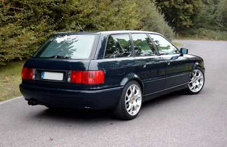
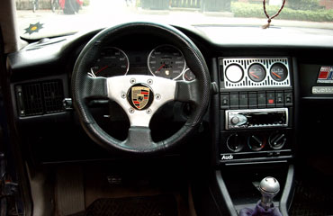

Extras
- eSSD
Motor
- 2,0 l / 85 kW (115 PS)
- offener Luftfilter
Abgasanlage
- Eigenbau
Bremse
- V6
Felgen / Reifen
- 8 x 17 RH Technic mit Porsche Emblemen
- 225 / 45 - R17
Fahrwerk
- 60 / 40 Weitec
Sonstige Umbauten
Außen
- original RS2 Front
- DE-Scheinwerfer getönt
- Böser Blick
- Grill ohne Emblem
- Wischer vorn 2 x Passat 35i Beifahrerseite (liegen unter der Haube)
- Wischer hinten entfernt
Innen
- 260 km/h Tacho mit Chromringen und Porsche Emblemen
- Zusatzinstrumentehalter aus Alu in mittl. Lüftungsgitter (Eigenanfertigung)
- Porsche Schaltknauf
- eFh und elektr. Spiegelverstellung
- Klimaanlage, Sitzheizung und Tempomat nachgerüstet
Musikanlage
- Alpine CD-Radio
- 2 x Alpine 2-Wege-Systeme
- 2 x 30cm Impulse Subwoofer
- Crunch Endstufe (für Subwoofer)
- Magnat Endstufe
Kontakt
steffen@vwclubms.de